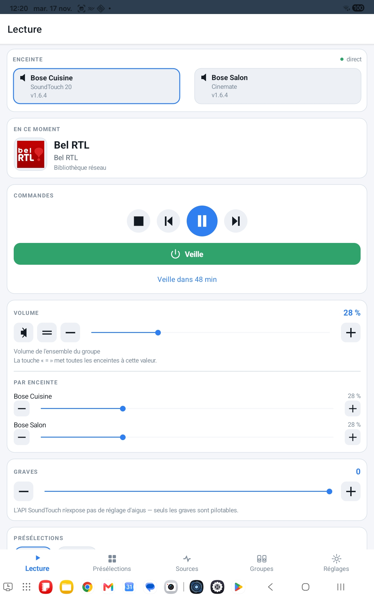

SoundReborn Remote — User manual
Version 1.9.1 · Android 7 and later
Contents
- What you need first
- Installing
- First run
- The Play tab
- The Presets tab
- The Sources tab
- The Groups tab
- The Settings tab
- Gestures
- What to do if…
- Known limits
- Notices
1. What you need first
SoundReborn Remote controls Bose SoundTouch speakers from an Android phone or tablet. Everything happens on your local network: no account, no online service, no data leaving your home.
Four conditions:
- Phone and speakers on the same Wi-Fi. Beware of guest networks and routers that isolate devices from each other — nothing will be found in that case.
- The STR agent installed on the speakers. It replaces what the Bose cloud provided until it was shut down on 6 May 2026. Without it the app still works, but is reduced to what the firmware alone exposes: volume, bass, presets already stored. Station search, assigning presets and reliable grouping all go through the agent. Installation is done with the STR tool for PC or Mac — https://st-reborn.de. This app does not install it; it only flags the speakers that lack it.
- An STR agent 1.8.0 or later to change groups. With an older agent, the app says so and leaves groups alone; everything else works.
- Android 7 or later.
2. Installing
The app is not distributed through the Play Store. Download it from the project's Releases page: https://github.com/ben240374/SoundRebornRemote/releases
- Download the
.apkonto the phone. - Open it. Android will ask permission to install from an unknown source — grant it to whichever app did the downloading, usually the browser.
- Install, then open.
After that, the app itself tells you about new versions and can install them (Settings tab, Update).
No special permission is requested on first launch: the app touches neither contacts, nor location, nor storage.
3. First run
The app starts in the phone's language when it knows it — French, English, German, Dutch, Spanish, Italian — and in English otherwise. You can change this at any time.
On first launch no speaker is known. Go to Settings, then Scan the local network.

The search works in two stages. It first asks devices to announce themselves (mDNS), which is the fast path, two or three seconds. If nobody answers, it queries all 254 addresses of the subnet on port 8090 one by one — a few seconds longer, but it works even where multicast is filtered.
Speakers found appear under KNOWN SPEAKERS. Tap Use on the one you want to control. It is remembered: on the next launch the app reconnects to it on its own.
If the scan finds nothing but you know the speaker's IP address, type it in the field provided and tap Add.
4. The Play tab
The main screen, the one you open to act quickly.

Choosing the speaker
At the top, one card per known speaker, with its model and STR agent version. The card outlined in blue is the one being controlled; tap another card to switch, without going through the settings.
The small dot on the right shows the link: live means the speaker pushes its changes in real time, polling that the app re-reads them at intervals. While polling, a change made from another remote takes a second or two to appear.
Now playing
The artwork, title and source of what is playing. For a radio station, its logo and name; for Spotify, the album cover.
When Spotify plays and the STR agent is version 1.8.1 or later, two buttons appear under the title: Like adds the current song to Liked Songs, Dislike removes it, like the thumbs keys of the remote. The song goes to the Spotify account the speaker is logged in with, which is not necessarily the one on your phone. A speaker with a display shows "LIKED" or "REMOVED".
During a Spotify key (a preset that plays a Spotify playlist), the speaker itself only knows the playlist name. With STR agent 1.8.2 or later, the app shows the song, the artist and the cover instead, with "Spotify · playlist" as the source; the song is read again every five seconds or so.
For an internet radio, the app also shows the song the station announces, as the speaker's display does: the title in large type, the artist below, and "station · Internet radio" as the source. A station that sends nothing, or only its own name, keeps the usual display; a text without an artist (a programme, an advert) is shown as it is. The song is read again every five seconds or so.
Controls
Four keys: stop, previous, play/pause, next. Depending on the source some have no effect — a live radio stream cannot be rewound.
The green Standby bar turns the speaker off; once off, it reads Turn on.
Below the bar, Sleep timer sends the speaker to standby after 15 to 120 minutes. While it runs, the link shows the time left; tap it to change the duration or cancel. In a group, the app asks whether to switch off the whole group or only the selected speaker. The timer lives in the speaker's STR agent: it keeps running if you close the app, but a speaker restart cancels it. The link only appears when the agent knows the timer.
Volume
Mute, level, minus, slider, plus. The percentage is shown on the right.
When the speaker is part of a group, this slider becomes the volume of the whole group: moving it shifts every speaker by the same amount, which preserves the balance you set between them. If the kitchen is at 60 and the living room at 30, raising the group by 10 gives 70 and 40, not 70 and 35.
The = key, between mute and minus, does the opposite: it sets every speaker in the group to the displayed value. Group at 25, everyone at 25. It only appears while a group is active — on its own, a speaker has nothing to level.
Below the slider, Per speaker lists each member of the group with its own slider and its own − and + keys, so you can turn the kitchen down without touching the living room. A speaker that is switched off is dimmed and does not react: sending it a command would only make the app wait for nothing.
Bass and presets

Bass ranges from -10 to +10 depending on the model. There is no treble control: the speaker's API exposes none — this is not an omission in the app.
The six presets are repeated here to save a tab change. The tile outlined in green is the one playing.
When the STR agent handles the second row, two chips, Once and Twice, appear above the tiles: the second shows the six stations the speaker starts when a key is pressed twice. The choice applies to both tabs. Each tile shows the name of its key at the top ("Key 1" to "Key 6", in both rows), and the Twice chip carries a small number: how many keys of the second row hold a station.
To the right of the chips, Local replaces the tiles with your local presets, kept on the phone (see the Presets tab); Once brings back the speaker's keys.
The Once chip also carries a small number: how many keys of the first row hold a station.
Keep what's playing on a key, below the tiles, stores what the speaker is playing right now — station, album or library track — on the key you pick. Spotify, AUX and Bluetooth cannot be kept this way.
Voice message
The Voice message card makes the speaker talk, then lets it go back to what it was playing.
- Your voice: hold the round microphone button while you speak, release it to send (1 minute at most). The button turns red while recording. The phone keeps the message until the speaker comes to fetch it, then deletes it.
- A text: type it below the button, then Read. The speaker reads it with Google's voice, in the app's language; it needs internet access, and the text goes through Google.
- Keep adds the typed text to the list of kept texts (ten at most). Tap a kept text to have it read; ✎ edits it, ✕ deletes it after confirmation.
A short vibration tells you the microphone is running: speak from then on. The app adds a little silence before and after your message, so that the speaker, which opens its amplifier with a delay, does not swallow its beginning. A text is 200 characters at most.
The Announcement volume slider sets the volume of the message, voice and text: all the way to the left, the speaker keeps its volume; otherwise it switches to that volume for the message, then goes back to the previous one. The phone's microphone cannot be adjusted: for a louder message, raise this slider.
The message goes to the speaker that receives the commands. It does not yet play on every speaker of a group: that is planned in the STR agent. The first time, Android asks for access to the microphone. The card only appears with the STR agent.
Group with
One chip per speaker, other than the one the commands go to. Tap a chip to add that speaker to the group; a tick and a green outline appear. Tap it again to remove it.
Grouping takes a few seconds: meanwhile the block shows Grouping with …, then the result — or the error, in red.
The master is found, not assumed. In a group, one speaker streams and the others follow it. If you select a speaker that is following, the app says so — Grouped with … in amber — and sends transport, presets and volume to the master, because the master is what is playing. Selecting a speaker therefore never interrupts what you are listening to. Standby and the sleep timer are the exception: they act on the selected speaker.
On a speaker that follows, the ticked chip is that speaker itself: tapping it leaves the group. Extending the group is done from the master, since it is the master that composes it.
Turning a speaker off takes it out of the group first, and dissolves the group if it was the last member. Turning it back on gives you a speaker on its own, playing what it plays, which you can group again.
The Refresh link at the bottom re-reads everything: current title, artwork, volume, group state.
If the speaker you add is playing something else, or is paused, the app says so before grouping: "Salon is playing Radio Contact. Adding it to the group stops that to play Bel RTL." Nothing changes until you tap Add. A speaker in standby, or already playing the same thing, is added without a question.
5. The Presets tab

The six keys
The same six as the physical keys on the speaker. Each tile shows the station logo and its bitrate. Tap to start playback; the green outline marks the one playing.
Logos are downloaded and then kept locally. When one is missing, the station publishes no usable image, or its server is not answering.
Once, twice
With a recent STR agent (v1.6 and later), each key of the speaker holds two stations: one press starts the first, two quick presses the second. The Once and Twice chips choose the row shown; the tiles keep their key number, ① to ⑥.
The second row exists only in the agent: the chips do not appear on a speaker without the agent, or with an older one.
A key that has a station only on its second row shows as empty under Once: a single press on the speaker then starts the second-row station (STR agent 1.6.3 and later).
Local presets
The Local chip, on the right, shows presets kept on the phone, on top of the speaker's keys, as many as you like (100 at most). Tap a line to start the radio on the selected speaker; ✎ renames it, ✕ removes it after confirmation. The line of the radio that is playing is green.
To add some:
- Add what is playing keeps the radio the speaker is playing right now, with the stream's original address and its logo;
- Add an address asks for the stream's http or https address, then a name;
- in the search, tap a station, then Add to Local.
These presets stay on this phone: the speaker's keys do not know them, and another phone does not see them. A Spotify playlist cannot be kept there: the STR agent only starts a playlist from one of its keys. To keep them across a reinstall, export them from the Settings tab (Favourites backup).
Renaming and clearing a key
Each tile shows the name of its key at the top. On a key stored by the STR agent, two small buttons sit next to it: ✎ renames the key and ✕ clears it, after confirmation. Renaming changes only the name shown: the station, its picture and the playlist of a Spotify key stay. Names are limited to 64 characters. The Twice chip shows how many keys of the second row hold a station.
A key that only the speaker's firmware knows, and an empty key, have no buttons: there is nothing the agent could rename or clear.
Copy the keys to another speaker
The Copy the keys card copies all the keys of the selected speaker to another STR speaker, or to all of them. Tap Copy to…, choose the target, then confirm. Each key set here replaces the target's; the target's other keys stay. Both rows go to a target that keeps two. When a Spotify key is part of the copy, this speaker's Spotify account is handed on to the target: the confirmation question says so. The result is shown per speaker.
Copying needs STR agent 1.6.5 or later on the selected speaker.
STR favourites
With a recent STR agent, the ★ STR button, to the right of Local (Play and Presets tabs), shows the starred stations of the STR app on a computer in place of the keys. They are the same on every STR speaker: a favourite added or removed here is added or removed on the other speakers and on the computer too, a few seconds later. Once or Twice brings the keys back.
- Tap a favourite to play it on the selected speaker.
- ⋯ offers Put on a key…, Add to Local and Remove from STR favourites (after confirmation).
- ★ Add what's playing keeps the radio the speaker is playing; in the search, ⋯ Keys, Local… offers ★ Add to STR favourites.
- A Pandora station is listed, but plays from the STR app.
Find a station
The search box queries radio-browser.info, an open directory maintained by volunteers. The search follows the one of the STR desktop app:
- Country (all in alphabetical order, overseas territories included: Martinique, Réunion, Guadeloupe…) and Language narrow the search; Sort orders stations by popularity (votes), plays, trend, name or bitrate. Changing one of these runs the last search again.
- The genre chips (All, Pop, Rock, Hits, Jazz, 80s…) filter by genre; the first two depend on the country (Chanson and Levenslied for Belgium). More genres adds the directory's most frequent genres. With nothing typed, a chip browses the directory, like the Top list.
- Top list shows the most-voted stations, with these filters.
- A search of several words also looks for those words among the genres ("rock belge"), and finds a name written with other punctuation ("Mi Soul" finds "Mi-Soul").
- A stream address pasted in the box (http://… or https://…) finds the directory station that broadcasts it; an unknown one shows as Pasted address, which you can play or store like any other.
- Show more, below the results, adds the next page.
Working stations only (ticked by default) leaves out the stations the directory found down at its last check. A station just added to the directory, not yet checked, stays visible. If a name only finds stations reported as down, they are shown anyway, with a warning: the directory checks from abroad, and a station limited to its own country looks dead there while it plays fine at home.
Bose-compatible only (ticked by default, best left that way) filters out the formats SoundTouch speakers cannot decode (Ogg, Opus, FLAC), which would produce silence with no error message. Bitrate hides the stations below a chosen bitrate; those with an unknown bitrate stay. Both filters act on the list already received, without a new search, and the number of hidden stations shows below the results header.
A station is missing? The link below the results opens radio-browser.info, where anyone can add it: it then turns up here, and for everyone.
Tap a result: the line opens and offers three choices that cannot be mistaken.
- 📱 ▶ Listen on this phone (or this tablet): the station plays on the device, so you can hear it before playing it on the speaker. The button becomes 📱 ■ Stop; a bar above the results says what is playing, with ■ Stop and 🔊 Play on …. One station at a time; it stops when you leave the tab or the app, and when you play the station on the speaker. Away from Wi-Fi it uses mobile data (about 1 MB per minute at 128 kbit/s). A station that does not play on the device may still play on the speaker: the STR agent converts formats Android's player cannot read.
- 🔊 Play on Kitchen: with the full name of the selected speaker, the station starts on the speaker, storing nothing.
- ⋯ Keys, Local… opens an action sheet with Play on Kitchen, ★ Add to STR favourites (recent agent), Add to Local, then ① Assign to this key if the key is free, or ① Replace Bel RTL if it is taken — the name of the station already there is shown, so you do not overwrite one you cared about.
Assigning requires the STR agent. Without it only immediate listening is possible; storing is then done by holding the key on the speaker itself, or from the STR desktop app.
With the second row, the sheet offers twelve keys: ① to ⑥, then ①×2 to ⑥×2. A station lives on one key only: if it is already stored elsewhere, the agent refuses and the app says which key holds it.
6. The Sources tab

Bluetooth, AUX and Standby at the top: three direct shortcuts.
Spotify is not driven from this app. Open Spotify on your phone and pick the speaker in the device selector (Spotify Connect): it appears there as soon as the STR agent is running.
Speaker sources lists what the speaker declares, with its state: READY means
available, UNAVAILABLE that the source exists but cannot be used — typically a
streaming service whose account is no longer reachable since the cloud shutdown.
Play a stream accepts the address of a direct audio stream — an .mp3 or an
.m3u8 — and starts it on the speaker. Useful for a web radio missing from the
directory. This needs the STR agent.
Record keeps an extract of the internet radio the speaker is playing on your phone, to listen to it again or send it (WhatsApp, e-mail…). Tap Record: recording stops when you tap Stop, or on its own after 5 minutes. It goes on with the screen off: a "Recording" notification shows the counter and a Stop button. On the first recording, Android 13 and later ask you to allow notifications; if you refuse, recording still works, without the notification.
Only internet radios whose stream can be reached are recorded: STR presets, stations found
in the directory, streams started by hand. Spotify, Deezer, Bluetooth and AUX do not go
through the phone and cannot be recorded, nor can HLS streams (.m3u8). The phone opens
the station's stream alongside the speaker: listening is not disturbed, but recording uses
data, about 1 MB per minute.
The list keeps the last 10 recordings, with the station, date and length. ▶ plays them on the phone, ⤴ opens Android's share menu, the bin deletes after confirmation. Beyond 10, the app will not make a new one: first delete the one you no longer need. Recordings stay inside the app and are removed if you uninstall it. The list stays available even when no speaker answers: only recording is then impossible.
While a recording plays, a slider and a counter appear under it: "01:23 / 04:50", position and length. Drag the slider to move within the recording.
Recently played shows the history kept by the agent: tap a line to start it again.
A library album or folder is replayed in full, not just its first track. If the media server is switched off, the app says so instead of announcing playback that never starts.
7. The Groups tab

Master speaker states which one actually streams — read from the speakers themselves, not assumed to be the one you selected.
Speakers to group: tick those that should follow, then Group. Dissolve breaks up the whole group.
A speaker belongs to only one group at a time, and it is the master that composes it. If the speaker you selected is following another, Group is greyed out and a message points you to the master.
The Sticky group option asks the agent to re-form the group at the next playback, rather than letting it fall apart when the music stops. The app now reads this flag back before extending an existing group and hands it in unchanged, so adding one speaker no longer turns a sticky group into an ordinary one.
Group volume acts on every speaker at once, shifting volumes while keeping the gaps. If the kitchen is at 60 and the living room at 30, raising the group by 10 gives 70 and 40 — not 70 and 35. Below that slider, each speaker in the group has its own. Apply to the whole group sets everyone to the same value, which is what the = key does in the Play tab. This block appears only when a group exists.
A permanent group stays the way you built it. Putting one of its speakers in standby takes it out of the group that is playing without removing it from the saved group: it joins again on the next play. And when a permanent group is waiting for its next play, the app says so and asks before forming a different one in its place.
If no group is playing, an ordinary group is saved and you tick Permanent group, the app also asks first: a permanent group the agent keeps aside behind it would be replaced.
8. The Settings tab

Selected speaker: name, address and model. This is the speaker you picked — not necessarily the one receiving the commands. When it is following a group, a line in amber says where the commands actually go, and why.
Alarms: those of the selected speaker — an alarm rings only the speaker it is saved on, even in a group. Each alarm plays a key (1 to 6, or 1 to 6 pressed twice) at the time and on the days you choose (the Mon → Fri, Weekend and Every day shortcuts tick the days in one go; each box can still be changed). You also set its volume (or keep the speaker's), the automatic switch-off and the snooze length. The card shows the next alarm as the speaker plans it, and warns when its clock is not set yet. If the speaker's time zone is empty (UTC), the phone's is saved with the next alarm. Alarms changed elsewhere — the STR phone page, the desktop app — are not overwritten: the app saves only what you changed. Needs the STR agent. The time is set on the phone's clock dial. The bin on a line deletes the alarm, after confirmation.
Start volume: the level the speaker takes when it is switched on and starts playing. Tick the box, pick the level, then Save the start volume. A volume set while listening is never changed.
Snooze key (in the alarms card): tick the remote key that snoozes a ringing alarm — AUX, Thumbs up or Thumbs down — then Save the snooze key. Outside an alarm, a thumbs key does nothing and AUX switches to the AUX input as usual. A thumbs key that already carries another action (sleep timer, bass…) says so; ticking it replaces that action, and the app says so first. Only the boxes you change are written: an action set elsewhere on another key stays. A key that carries a saved group is refused by the speaker, which says why.
Language: English, French, German, Dutch, Spanish, Italian. The change is immediate, with no restart, and is remembered.
Theme: System, Light or Dark. "System" follows the phone's display setting, including its automatic switch in the evening.
Search: the network scan, and manual entry by IP address. Discovery asks mDNS first and only sweeps the subnet if that finds nothing. The sweep is restricted to private address ranges, so it never reaches a mobile network or a VPN tunnel.
Known speakers: the remembered list. Use switches to one, ✕ forgets it. A speaker marked "No STR — ready for installation" answers fine but has no agent; an explanatory block then appears further down, with a link to the STR project site.
A speaker whose agent is older than version 1.8.0 brings up a similar block, STR agent too old, and its card in the Play tab reads "too old".
STR agent: new version: at most once a day, when Settings opens, the app reads the latest STR agent version from GitHub. When known speakers have an older agent, a card names them, with What's new and Later (the card comes back with the next version), and their card in the Play tab shows "1.9.1 available". The agent is updated with the STR app on a computer. The Check automatically box of the Update card also turns this off.
Diagnostics: Query the speaker reports on the selected speaker — name, model, device ID, firmware version, the agent with its port and its version read live on both 17008 and 8888, the state of notifications, the bass range, the list of recognised API endpoints, and what each known speaker declares about the current zone. This is the information to attach to a problem report. Clear the logo cache forces station images to be downloaded again.
Favourites backup: the local presets and the kept texts of the voice message only live on the phone. An update keeps them; an uninstall erases them, including the one Android requires before installing an APK signed with another key. Export creates a file and opens sharing (Drive, e-mail, Files…); Import reads such a file back and adds what is missing, without replacing or deleting anything.
Speaker backup: Save to a file keeps what the STR agent stores for the selected speaker — keys 1 to 12 (a Spotify key with its playlist), the alarms, the start volume and the snooze key. Restore from a file… puts them back, after a question naming the target speaker and the one the file comes from: the file can also copy these settings to another speaker. The keys in the file replace those of the speaker, the others stay; its alarms are replaced. Without a second row on the target speaker, keys 7 to 12 are skipped. The report says what was restored and what the speaker refused. The permanent group is not saved. A Spotify key only plays if the speaker is signed in to the same Spotify account. STR agent required.
Update (version installed from GitHub): at most once a day, the app asks GitHub whether a newer version is published; the Check automatically box turns that off. Check now does it on request. When there is one, a banner also appears in the Play tab (What's new, Later, Install). Install downloads the APK, checks that it has exactly the size and SHA-256 fingerprint published on GitHub, then opens Android's installer, where you confirm. The first time, Android asks you to allow SoundReborn Remote to install apps. Android refuses to install over an APK signed with another key: a test build started from Visual Studio is not updated this way.
About: the version, credit to the STR project with a link to its site in the chosen language, and the legal notices.
9. Gestures
Swiping horizontally moves to the next or previous tab: Play → Presets → Sources → Groups → Settings. The gesture must be brisk; a slow drag is not read as a tab change.
A swipe that starts on a slider is taken by the slider: that is deliberate, otherwise the volume would become impossible to set. Start the gesture on a neutral area.
Long press on the app icon (Android launcher): All standby puts every known speaker with the STR agent on standby — a speaker without the agent is left alone, because its only standby command would switch it on if it were off —, and Key 1 to Key 3 play that key on the selected speaker. The app opens on the Play tab and says what was done. These shortcuts can be dropped on the home screen.
10. What to do if…
The scan finds no speaker. Check that the phone is on the same Wi-Fi as the speakers, not on the guest network nor on mobile data. Some routers isolate devices from one another — the setting is usually called AP isolation or client mode. If you know the IP address, enter it by hand in Settings.
The speaker appears but nothing responds. It is probably in deep standby. Wake it with the power button on the Play tab, or press a physical key on the speaker.
A preset does nothing. An empty key has nothing to start. Check too that the speaker is not switched off.
No station logos are shown. Clear the logo cache in the diagnostics. If it persists for one particular station, its own image server is the cause.
The agent version is missing on a speaker. Either the agent is not installed there, or it is too old to publish its version number. Run the scan again.
The group will not form. Both speakers must be on and reachable. If one of them has no STR agent, grouping falls back to the firmware, which is less reliable and sometimes refuses without a message.
The app is in the wrong language. Settings → Language. Your choice overrides the phone's language.
The Record button is greyed out. The message under the title gives the reason: nothing is playing, the source is not an internet radio, or the stream address of this station is unknown. Start the station again from a preset or the directory, then reopen the Sources tab.
The speaker does not play the voice message. The message under the card says why. If the speaker did not come to fetch it, the Wi-Fi probably isolates devices (guest network). A press that is too short sends nothing: keep your finger on the button while you speak. The read text needs internet access on the speaker. When a message did not go out, Try again, next to the reason, sends it again as it is, without recording it again.
My local presets disappeared after an update. A normal update keeps them. They disappear when the app has been uninstalled — Android requires it to go from a version signed with another key, for example from a test build started from Visual Studio to the published version. Export them first in Settings → Favourites backup, then import the file.
11. Known limits
- No treble control. The speaker's API exposes none.
- The app does not install the STR agent. That requires system access to the speaker and a reboot; it is the job of the STR tool for PC or Mac.
- Spotify is driven from Spotify, through Spotify Connect.
- No DLNA library browsing at this stage.
- Android only. There is no iOS version.
- The second row, the sleep timer and “keep what's playing” need a recent STR agent. On an older agent these commands do not appear or are refused.
- Stereo pairs. The app neither creates nor undoes a stereo pair. A pair cannot lead a group; with an STR agent 1.6.3 or later it can join one started on another speaker.
- Recording: internet radios only, 5 minutes at most per recording, 10 recordings kept.
- Copying the keys: STR agent 1.6.5 or later on the source speaker.
- Like and Dislike: STR agent 1.8.1 or later. The song goes to the Spotify account the speaker is logged in with.
- Renaming and clearing keys: STR agent 1.8.0 or later; the song of a Spotify key: 1.8.2 or later.
- Voice message: the selected speaker only. An announcement on a whole group waits for the STR agent. The read text goes through Google's voice: it leaves your network, and the speaker needs internet access.
- Local presets: radios only, kept on this phone.
12. Notices
SoundReborn Remote is a personal project, released under the MIT licence.
It is neither produced nor endorsed by Bose Corporation. "Bose" and "SoundTouch" are trademarks of Bose Corporation, named here only to indicate compatibility.
It is independent of the STR project: not built, maintained or supported by it. Problems with this app should be reported on its own repository, not to the STR project.
The STR (SoundTouch Reborn) agent is the work of Jens Roggenfelder (JRpersonal) — https://st-reborn.de. Without it, this app would have nothing to control.
The station directory is provided by radio-browser.info.
The code was written with Claude (Anthropic).